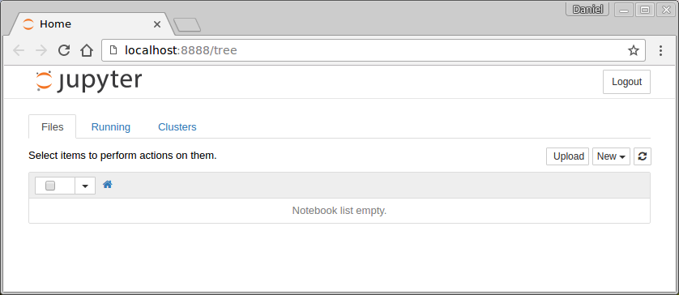

A maneira mais fácil de instalar os softwares necessários para acessar o conteúdo das aulas no seu computador pessoal é instalando o pacote Anaconda, disponível para download no site https://www.continuum.io/downloads. Clique nesse link, vá até a seção correspondente ao seu sistema operacional, e selecione Python 3.6.
Vamos supor que você esteja usando uma distribuição do GNU/Linux que seja o Ubuntu ou uma distribuição derivada do Ubuntu.
Abra um terminal (pelo menu ou digitando Ctrl+Alt+T).
Primeiro, certifique-se de que o repositório universe está habilitado e atualize a lista de pacotes instaláveis. Isso pode ser feito com os comandos:
sudo add-apt-repository universe sudo apt-get update
Depois instale os seguintes pacotes:
sudo apt-get install python3-setuptools python3-pip libfreetype6-dev python-dev -y sudo apt-get install pandoc texlive-latex-base texlive-xetex \ texlive-fonts-recommended texlive-generic-recommended -y
Os pacotes instalados na segunda linha são necessários se você quiser ter a opção de gerar arquivos .pdf a partir de arquivos notebook .ipynb.
Finalmente, atualize o pip e instale o Jupyter e a biblioteca matplotlib.
sudo -H pip3 install --upgrade pip sudo -H pip3 install jupyter notebook matplotlib
Para fazer as atividades desta unidade, vamos usar um software chamado Jupyter Notebook.
No laboratório onde você assite às aulas, supondo que você esteja usando o Linux, basta abrir um terminal – através do menu lateral ou teclando Ctrl+Alt+T – e digitar:
jupyter notebook
Se você está no seu computador pessoal e tem o Anaconda instalado no Windows, é só abrir Programas » Anaconda » Jupyter Notebook.
Aguarde a inicialização do servidor e a abertura de uma aba no navegador com o Jupyter Home.

Se você obteve sucesso até este ponto, ignore a próxima seção.
O ideal mesmo é você usar o Jupyter Notebook instalado ne sua máquina para fazer as atividades, pois é identico ao ambiente usando nas aulas, é mais rápido e dispensa o uso da internet.
Se você não tiver sucesso ao instalar o Jupyter no seu computador, você tem algumas alternativas.
Atenção: ao usar qualquer servidor de notebooks remoto, procure baixar uma cópia do seu trabalho com frequência através do menu File » Download as » IPython Notebook (.ipynb).